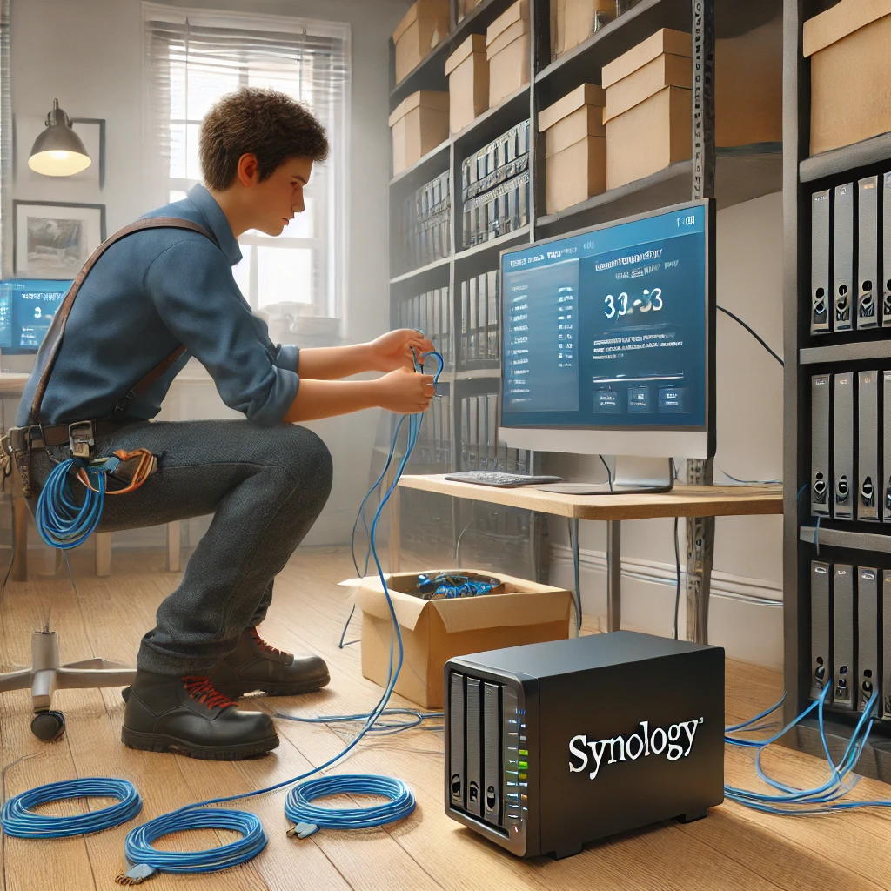
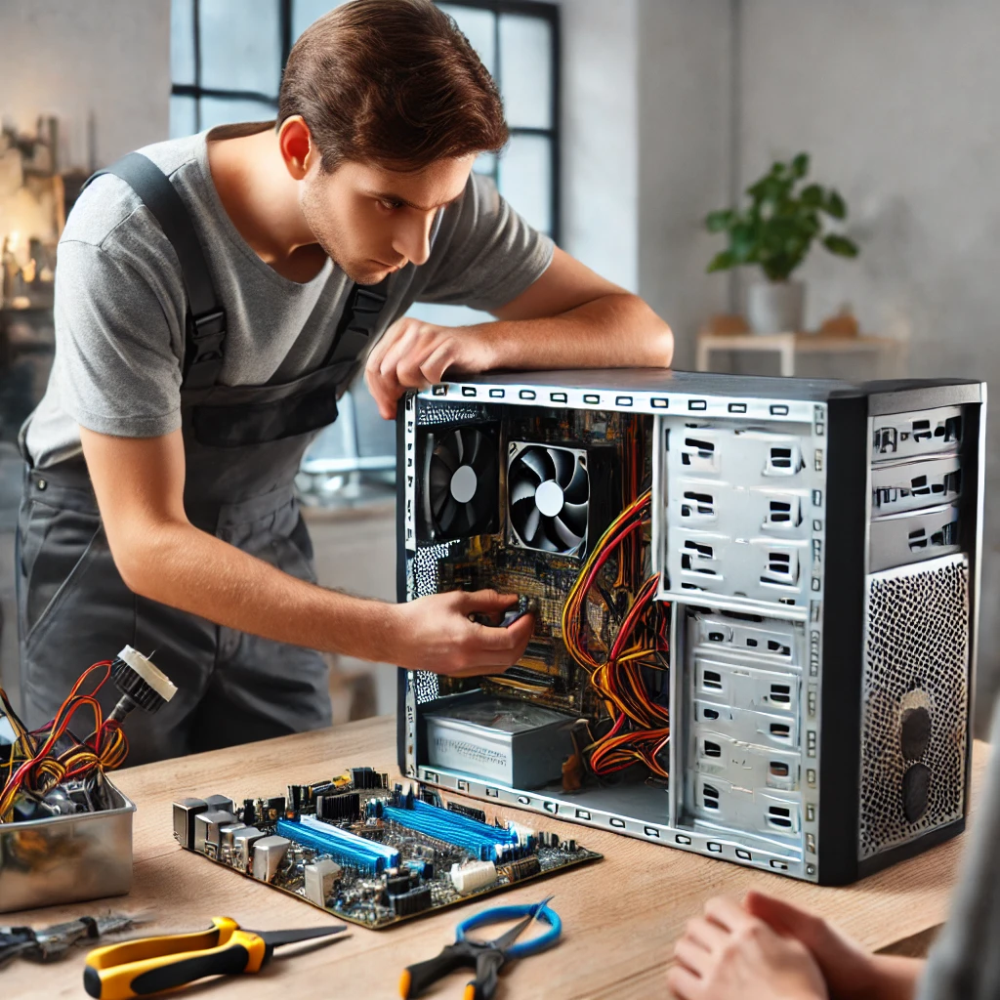

Stage à l'Association Educoeurdi
Configuration d’un serveur Dell PowerEdge R620
Mise en place d’un RAID 5 et installation de Windows Server 2022 pour la mise en place d'un domaine AD.

Installation et configuration d’un NAS Synology
Utilisation du NAS comme serveur PXE pour automatiser l’installation de Windows 10 Pro.

Interventions et dépannage chez les clients
Réparations de PC et imprimantes, résolution de pannes matérielles et logicielles.
Vérification et remplacement des composants
Ajout de RAM, batteries et disques SATA ou NVMe sur des ordinateurs portables.
Installation de systèmes d’exploitation
Installation de Windows et Mac via clé USB PE et clé Ghost.

Publication d'annonces sur Facebook Marketplace
Vente des ordinateurs prêts à l’emploi après reconditionnement.

Téléprospection et partenariats
Appels aux entreprises pour acheter du matériel informatique.